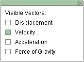
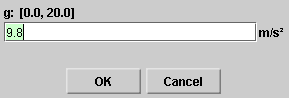
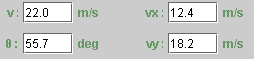

There are four basic control buttons. They are, from left to right:
-
 Rewind. Resets the simulation to the initial
position with the previously chosen initial values. If
you have the particle path displayed, Rewind will allow
you to compare paths traversed under different
conditions, e.g., different initial velocities.
Rewind. Resets the simulation to the initial
position with the previously chosen initial values. If
you have the particle path displayed, Rewind will allow
you to compare paths traversed under different
conditions, e.g., different initial velocities.
After clicking Rewind, click Play to restart the motion.
-
 Play/Pause. Starts the motion.
Play/Pause. Starts the motion.
After Play has been clicked, the button will change into the Pause button
 .
.
Clicking Pause will freeze the motion. To resume the motion, click Play once more.
-
 Step. Lets you step through the motion in equal
time steps. The size of the time steps can be adjusted
by means of the Time Step slider. See Point 9 below.
Step. Lets you step through the motion in equal
time steps. The size of the time steps can be adjusted
by means of the Time Step slider. See Point 9 below.
-
 Reset. Resets the applet to its default
setting.
Reset. Resets the applet to its default
setting.
Adjustments in the initial conditions can only be made after first clicking REWIND or RESET.


Displays or hides the ball's path in cyan.
The path is not erased when you click the Rewind button.

Displays an x,y coordinate grid that makes it easier to judge the ball's position. The x-axis points to the right and the y-axis points upward.

This toggle button displays or hides the Vector Panel shown below on which you can select the vectors that you want to have displayed. Only one vector, Velocity, is selected in the Vector Panel shown below. This corresponds to what is shown in the image at the top of this Help document.
Four vectors can be displayed: Position in cyan, Velocity in magenta, acceleration in orange, and Force of Gravity in green.

When the Components toggle button is selected, the x and y components of the velocity vector are displayed in pale magenta. To hide the components, click the button a second time.
When this button is selected, clicking anywhere in the applet window will place a bull's eye target at the point clicked. The (x,y)-coordinates of the target's location will be displayed as long as the mouse button is depressed. Dragging with the mouse lets you drag the target to another location. Clicking on the target will remove the target, but only if the Target button is selected.

When the Coordinates button is selected, clicking anywhere in the applet window will place a "+" marker at the point clicked and display the x,y coordinates of the point. This way you can measure the coordinates of a point. The point can be dragged to a new location as long as the mouse button is depressed. Clicking on a "+" will remove it, but only if the Coordinates button is selected at the time.


Displays or hides the draggable Data box shown above. The box contains the following information:
- t: time elapsed since the beginning of the motion
- x: ball's x-coordinate
- y: ball's y-coordinate
- ax: x-component of the ball's acceleration
- ay: y-component of the ball's acceleration
- m: mass of the ball
- Fgrav,x: x-component of the force of gravity acting on the ball
- Fgrav,y: y-component of the force of gravity acting on the ball
There are two sliders, for adjusting the size of the time step and the magnitude g of the acceleration due to gravity. The time step can be varied from 0.00 s to 1.00 s in steps of 0.01 s. g can be varied from 0.0 m/s2 to 20.0 m/s2 in steps of 0.1 m/s2.
Clicking on a slider to the left or right of the slider tab allows fine adjustment of the slider setting.
Clicking on the Input Dialog button  of a slider will open a dialog for entering an exact
value for the slider setting. The dialog for the
g-slider is illustrated below. The range in which
values can be entered, from 0.0 m/s2 to 20.0
m/s2 in this case, is indicated above the data
entry field.
of a slider will open a dialog for entering an exact
value for the slider setting. The dialog for the
g-slider is illustrated below. The range in which
values can be entered, from 0.0 m/s2 to 20.0
m/s2 in this case, is indicated above the data
entry field.


Four data entry fields are provided for setting the initial velocity, the first two for the x and y components of the velocity, and the last two for the magnitude v and the direction angle q of the velocity. q is measured in the positive sense relative to the positive x-axis.
After typing new values into one or two of the fields, press ENTER to make them effective.
During the motion, these entry fields are constantly being updated and show the current velocity.
When the velocity vector is displayed, the velocity can also be changed by dragging the tip of the velocity vector.
The velocity can only be adjusted after REWIND or RESET, not when the motion is paused.
Before starting the motion, you can drag the ball to a desired starting position. The ball's x and y position coordinates are displayed in the Data box. They are updated throughout the motion, along with the values of other variable quantities.
If you hold the Shift key down while dragging the ball, the ball will move only vertically. This makes it easier to set the ball to a given initial position because one does not have to control the ball's horizontal and vertical coordinates at once. Displaying the Grid may also help in dragging the ball to a specific location.
On each axis there is a shadow ball, which is the projection of the main ball onto either one of the two axes. When the main ball moves, so do the shadow balls. The shadow balls perform motions that simulate the behaviour of the main ball's x and y coordinates.